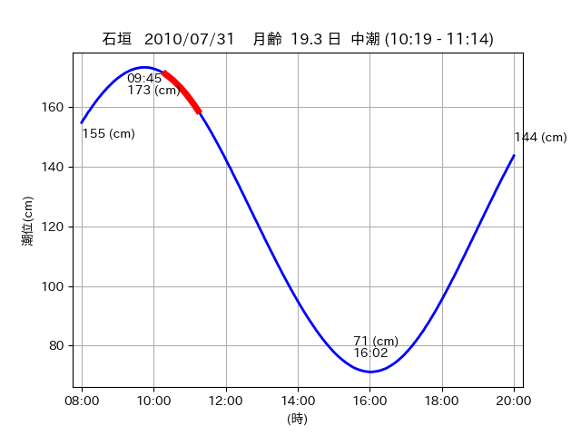
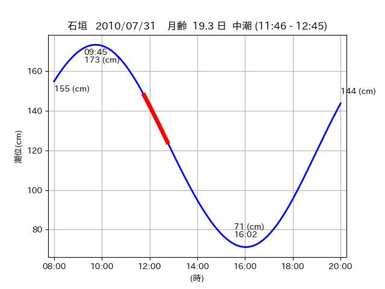
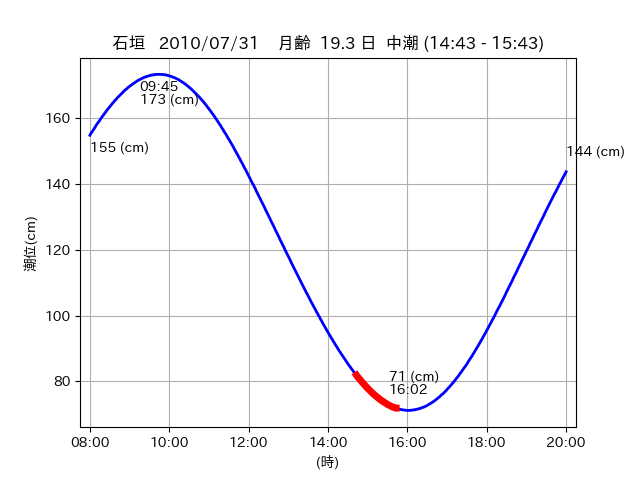

<!DOCTYPE html>
<html>
<head>
    
    <meta http-equiv="content-type" content="text/html; charset=UTF-8" />
    
        <script>
            L_NO_TOUCH = false;
            L_DISABLE_3D = false;
        </script>
    
    <style>html, body {width: 100%;height: 100%;margin: 0;padding: 0;}</style>
    <style>#map {position:absolute;top:0;bottom:0;right:0;left:0;}</style>
    <script src="https://cdn.jsdelivr.net/npm/leaflet@1.9.3/dist/leaflet.js"></script>
    <script src="https://code.jquery.com/jquery-3.7.1.min.js"></script>
    <script src="https://cdn.jsdelivr.net/npm/bootstrap@5.2.2/dist/js/bootstrap.bundle.min.js"></script>
    <script src="https://cdnjs.cloudflare.com/ajax/libs/Leaflet.awesome-markers/2.0.2/leaflet.awesome-markers.js"></script>
    <link rel="stylesheet" href="https://cdn.jsdelivr.net/npm/leaflet@1.9.3/dist/leaflet.css"/>
    <link rel="stylesheet" href="https://cdn.jsdelivr.net/npm/bootstrap@5.2.2/dist/css/bootstrap.min.css"/>
    <link rel="stylesheet" href="https://netdna.bootstrapcdn.com/bootstrap/3.0.0/css/bootstrap-glyphicons.css"/>
    <link rel="stylesheet" href="https://cdn.jsdelivr.net/npm/@fortawesome/fontawesome-free@6.2.0/css/all.min.css"/>
    <link rel="stylesheet" href="https://cdnjs.cloudflare.com/ajax/libs/Leaflet.awesome-markers/2.0.2/leaflet.awesome-markers.css"/>
    <link rel="stylesheet" href="https://cdn.jsdelivr.net/gh/python-visualization/folium/folium/templates/leaflet.awesome.rotate.min.css"/>
    
            <meta name="viewport" content="width=device-width,
                initial-scale=1.0, maximum-scale=1.0, user-scalable=no" />
            <style>
                #map_22eece9790fd5e0f384da567e908aa94 {
                    position: relative;
                    width: 2048.0px;
                    height: 1600.0px;
                    left: 0.0%;
                    top: 0.0%;
                }
                .leaflet-container { font-size: 1rem; }
            </style>
        
</head>
<body>
    
    
            <div class="folium-map" id="map_22eece9790fd5e0f384da567e908aa94" ></div>
        
</body>
<script>
    
    
            var map_22eece9790fd5e0f384da567e908aa94 = L.map(
                "map_22eece9790fd5e0f384da567e908aa94",
                {
                    center: [24.431, 123.848],
                    crs: L.CRS.EPSG3857,
                    ...{
  "zoom": 12,
  "zoomControl": true,
  "preferCanvas": false,
}

                }
            );

            

        
    
            var tile_layer_a80b309a5e15c52874e3c603214f9669 = L.tileLayer(
                "https://cyberjapandata.gsi.go.jp/xyz/seamlessphoto/{z}/{x}/{y}.jpg",
                {
  "minZoom": 0,
  "maxZoom": 18,
  "maxNativeZoom": 18,
  "noWrap": false,
  "attribution": "\u5730\u7406\u9662\u5730\u56f3",
  "subdomains": "abc",
  "detectRetina": false,
  "tms": false,
  "opacity": 1,
}

            );
        
    
            tile_layer_a80b309a5e15c52874e3c603214f9669.addTo(map_22eece9790fd5e0f384da567e908aa94);
        
    
            var marker_004602091b2db670fe2c56b8179e69a7 = L.marker(
                [24.4789, 123.8262],
                {
}
            ).addTo(map_22eece9790fd5e0f384da567e908aa94);
        
    
            var icon_7201dc5eee0110de7235a8f0aa6a13cf = L.AwesomeMarkers.icon(
                {
  "markerColor": "orange",
  "iconColor": "white",
  "icon": "info-sign",
  "prefix": "glyphicon",
  "extraClasses": "fa-rotate-0",
}
            );
        
    
        var popup_1e178ce0c755738ed18b060fe1a21ce6 = L.popup({
  "maxWidth": "100%",
});

        
            
                var html_243347bb0015795f166ef2d4d3d88ead = $(`<div id="html_243347bb0015795f166ef2d4d3d88ead" style="width: 100.0%; height: 100.0%;"><table><tr><td></td></tr><tr><td><center>20100731 No.1 </center></table></td></tr></table</div>`)[0];
                popup_1e178ce0c755738ed18b060fe1a21ce6.setContent(html_243347bb0015795f166ef2d4d3d88ead);
            
        

        marker_004602091b2db670fe2c56b8179e69a7.bindPopup(popup_1e178ce0c755738ed18b060fe1a21ce6)
        ;

        
    
    
                marker_004602091b2db670fe2c56b8179e69a7.setIcon(icon_7201dc5eee0110de7235a8f0aa6a13cf);
            
    
            var poly_line_63515bb68a5ead8741b481e366181b64 = L.polyline(
                [[24.4789, 123.8262], [24.4787, 123.8322]],
                {"bubblingMouseEvents": true, "color": "#00FFFF", "dashArray": null, "dashOffset": null, "fill": false, "fillColor": "#00FFFF", "fillOpacity": 0.2, "fillRule": "evenodd", "lineCap": "round", "lineJoin": "round", "noClip": false, "opacity": 1.0, "smoothFactor": 1.0, "stroke": true, "weight": 3}
            ).addTo(map_22eece9790fd5e0f384da567e908aa94);
        
    
            var marker_626ff9feb7cfe188a52b6f5179533ff1 = L.marker(
                [24.4703, 123.8371],
                {
}
            ).addTo(map_22eece9790fd5e0f384da567e908aa94);
        
    
            var icon_29e0747dbc45e9dfae214f30891046a5 = L.AwesomeMarkers.icon(
                {
  "markerColor": "orange",
  "iconColor": "white",
  "icon": "info-sign",
  "prefix": "glyphicon",
  "extraClasses": "fa-rotate-0",
}
            );
        
    
        var popup_12ec590ab1b5b88648a51dac53872c2c = L.popup({
  "maxWidth": "100%",
});

        
            
                var html_5a8620954f6e0f7a30805787be0c5530 = $(`<div id="html_5a8620954f6e0f7a30805787be0c5530" style="width: 100.0%; height: 100.0%;"><table><tr><td></td></tr><tr><td><center>20100731 No.2 </center></table></td></tr></table</div>`)[0];
                popup_12ec590ab1b5b88648a51dac53872c2c.setContent(html_5a8620954f6e0f7a30805787be0c5530);
            
        

        marker_626ff9feb7cfe188a52b6f5179533ff1.bindPopup(popup_12ec590ab1b5b88648a51dac53872c2c)
        ;

        
    
    
                marker_626ff9feb7cfe188a52b6f5179533ff1.setIcon(icon_29e0747dbc45e9dfae214f30891046a5);
            
    
            var poly_line_cea6f7844f9ebfa2c2dab2caecedb96a = L.polyline(
                [[24.4703, 123.8371], [24.4653, 123.8413]],
                {"bubblingMouseEvents": true, "color": "#00FFFF", "dashArray": null, "dashOffset": null, "fill": false, "fillColor": "#00FFFF", "fillOpacity": 0.2, "fillRule": "evenodd", "lineCap": "round", "lineJoin": "round", "noClip": false, "opacity": 1.0, "smoothFactor": 1.0, "stroke": true, "weight": 3}
            ).addTo(map_22eece9790fd5e0f384da567e908aa94);
        
    
            var marker_a371a016af7f8004e9aa0e356ae1475f = L.marker(
                [24.4329, 123.8461],
                {
}
            ).addTo(map_22eece9790fd5e0f384da567e908aa94);
        
    
            var icon_152af8bdf2e73057799aba3cf4618075 = L.AwesomeMarkers.icon(
                {
  "markerColor": "orange",
  "iconColor": "white",
  "icon": "info-sign",
  "prefix": "glyphicon",
  "extraClasses": "fa-rotate-0",
}
            );
        
    
        var popup_acb6635db61e0af45aadd88eb76287c8 = L.popup({
  "maxWidth": "100%",
});

        
            
                var html_6780de647d55e2385f403eddbfac9d72 = $(`<div id="html_6780de647d55e2385f403eddbfac9d72" style="width: 100.0%; height: 100.0%;"><table><tr><td></td></tr><tr><td><center>20100731 No.3 </center></table></td></tr></table</div>`)[0];
                popup_acb6635db61e0af45aadd88eb76287c8.setContent(html_6780de647d55e2385f403eddbfac9d72);
            
        

        marker_a371a016af7f8004e9aa0e356ae1475f.bindPopup(popup_acb6635db61e0af45aadd88eb76287c8)
        ;

        
    
    
                marker_a371a016af7f8004e9aa0e356ae1475f.setIcon(icon_152af8bdf2e73057799aba3cf4618075);
            
    
            var poly_line_f86e7e2ec8a7bda92c52b00bcc8604cf = L.polyline(
                [[24.4329, 123.8461], [24.4292, 123.8504]],
                {"bubblingMouseEvents": true, "color": "#00FFFF", "dashArray": null, "dashOffset": null, "fill": false, "fillColor": "#00FFFF", "fillOpacity": 0.2, "fillRule": "evenodd", "lineCap": "round", "lineJoin": "round", "noClip": false, "opacity": 1.0, "smoothFactor": 1.0, "stroke": true, "weight": 3}
            ).addTo(map_22eece9790fd5e0f384da567e908aa94);
        
</script>
</html>